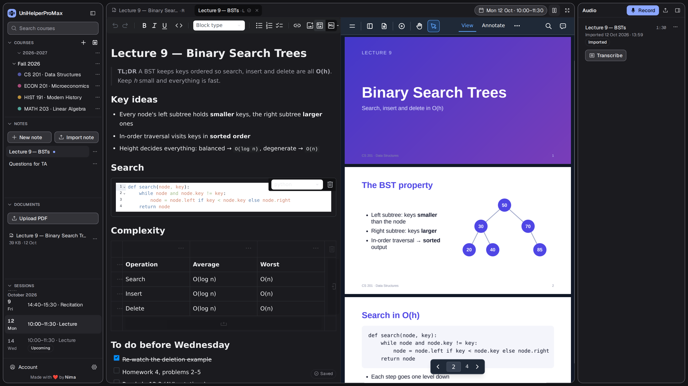
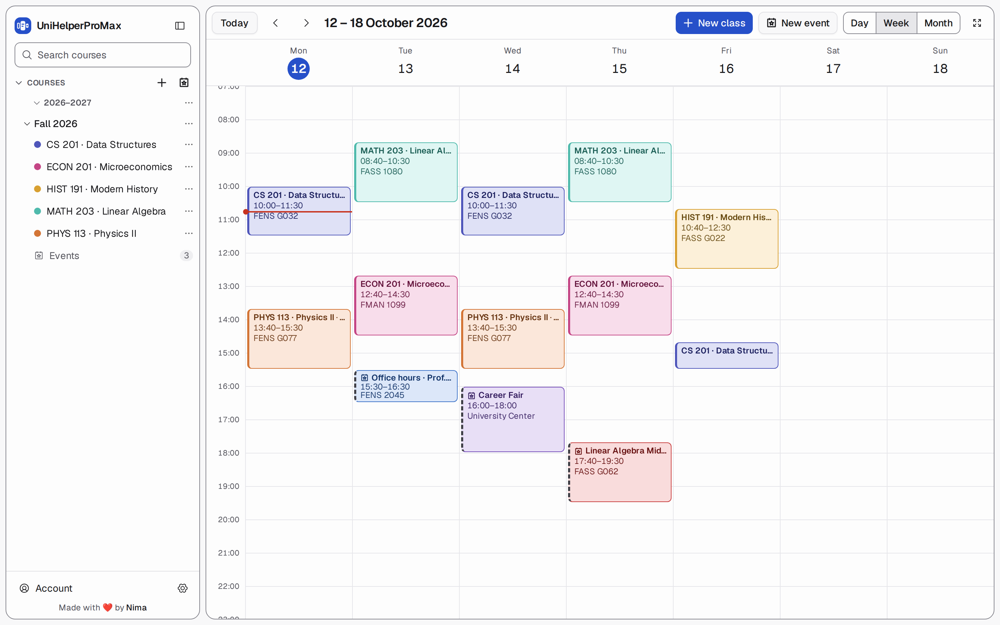
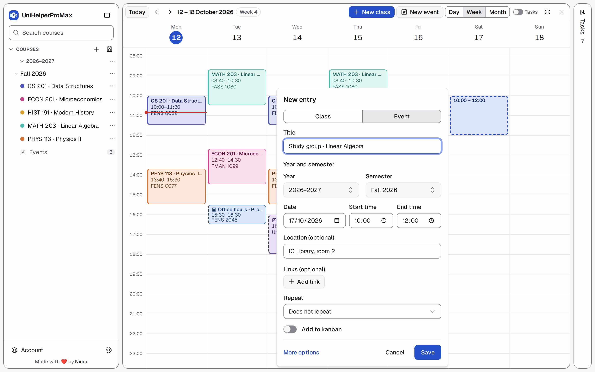
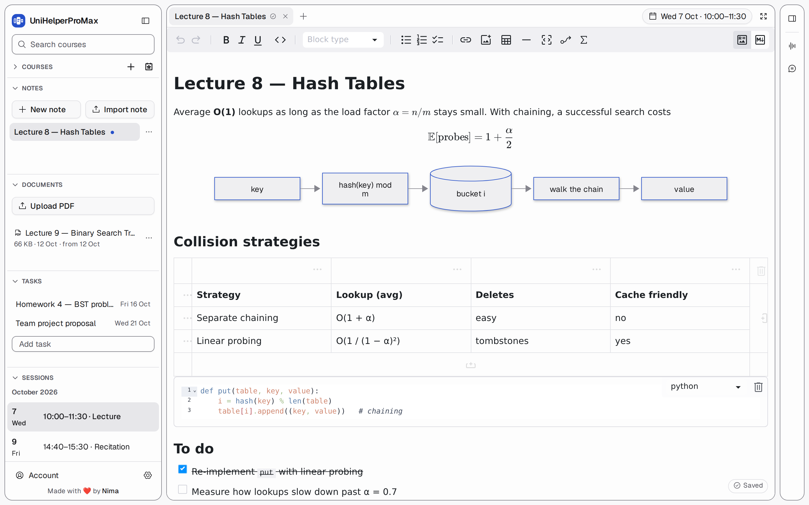
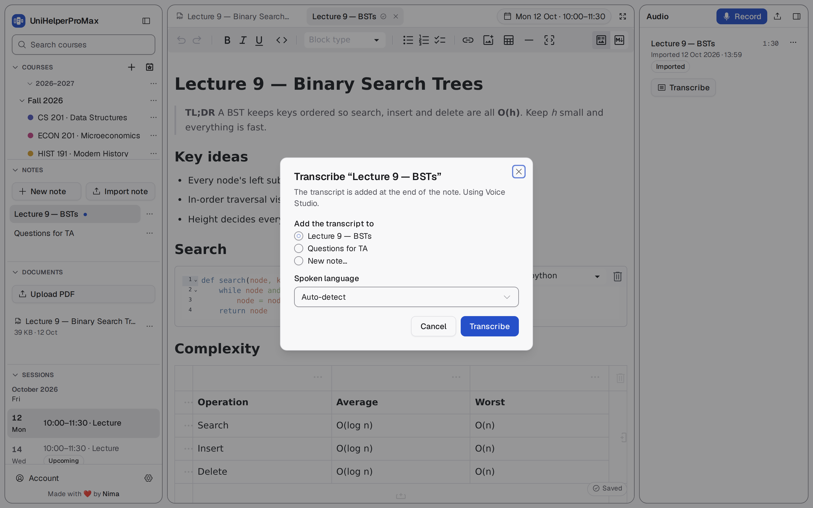
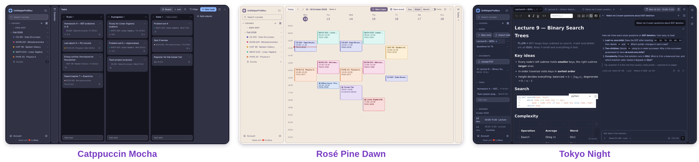

Calendar
A calendar built for university
Weekly classes, exams, office hours and seminars, with years and semesters.
Self-hosted · Open source · For students
Timetable, lecture notes, slides, recordings, transcripts and tasks, organised by class and stored as plain files you own.

Why you'll love it
Most students keep their schedule in one app, notes in another, slides in a downloads folder and recordings on their phone. UniHelperProMax gives every class session its own space. Open Monday's Data Structures lecture and its notes, slides, recording and transcript are already there, two clicks from the calendar, with every assignment and exam on a task board right next to it.
Calendar
Weekly classes, exams, office hours and seminars, with years and semesters.
Notes
A Markdown editor with tables, code blocks and checklists.
Documents
A built-in PDF reader with highlights, drawings and comments, in split view.
Audio
Recording keeps going if the tab closes or the Wi-Fi drops.
Transcription
The transcript is added to the end of your note and nothing you wrote changes.
Tasks
Assignments, readings and exam prep on a board or a list, with checklists and quick notes.
Appearance
18 built-in themes (Catppuccin, Dracula, Tokyo Night, Nord…) or design your own.
Import
Import from Google Calendar, Apple Calendar or Outlook (.ics). Importing again updates instead of duplicating.
Your files
A normal folder of .md, .pdf and audio files on your own disk.
A quick tour
01 · Calendar
Every course gets its own colour, a red line marks the current time, and exams or events stand out with their own marker. Switch between day, week and month, or import your existing timetable from Google Calendar, Apple Calendar or Outlook (.ics).

02 · Quick create
Press and drag on an empty slot. A small form opens with the semester already filled in. Pick Class or Event, give it a name and save. Made a mistake? Click Undo.

03 · Tasks
The home page shows your calendar and your tasks side by side. Add “Problem set 3, due Friday 23:59” and drag it from To do to Done, or switch to a list grouped into Overdue, Today, This week and Later. Each task gets a checklist, a description and quick notes.
Turn an exam into a task with Add to kanban, and switch on Show tasks to see due dates on the calendar. A task never needs a date, a course or a place on the calendar.
To do 2
Problem set 3
Linear AlgebraFri 23:59
Read chapter 4
Personal
In progress 1
Midterm prep
Data StructuresToday
Done ✓
Lab report 2
Physics II
04 · Notes
A live Markdown editor with headings, tables, syntax-highlighted code and to-do lists. Each note is a plain .md file in that class's folder, so you can also open it in VS Code, Obsidian or any other editor.

05 · Record & transcribe
Hit Record during the lecture or upload an audio file you already have. Afterwards click Transcribe, choose a note, and the transcript is added to the end of it. It runs on the server, so you can close the laptop and come back later. Works with any OpenAI-compatible speech API, including one you host yourself.

06 · Themes
Pick from 18 built-in themes, or make your own from four colours. The editor flags any colour pair that's hard to read. Your theme follows you to every device.

And a lot of small things
Every screen works with only a keyboard, including the calendar, PDF reader and audio player.
Slides on one side, notes on the other. Toggle with Alt+\.
Deleted classes come back with all their notes, recordings and documents.
One install for you and your friends, with no public sign-up.
Export to .ics, which also works as a portable backup of your schedule.
Highlights, drawings, text boxes and comments, saved next to the PDF. The PDF itself is never modified.
Hide the calendar or the tasks with Shift+C / Shift+T and the other one gets the room.
Deleted a task, a checklist item or a quick note? Undo brings it back, right where it was.
Save every task to .csv, checklists and quick notes included, ready for any spreadsheet.
Installation
The installer checks what you have, sets up the backend with uv, builds the app and tells you exactly what's missing. Run it again any time to update. Your notes are never touched.
Or skip all of that with Docker: one small container (about 25 MB to download).
Full guide on GitHub →curl -fsSL https://raw.githubusercontent.com/Nimaj2002/UniHelperProMax/main/install.sh | bashIt clones into ./UniHelperProMax. Prefer to read it first? Clone the repo and run ./install.sh.
cd UniHelperProMax && ./start.shirm https://raw.githubusercontent.com/Nimaj2002/UniHelperProMax/main/install.ps1 | iexNo Node.js yet? winget install OpenJS.NodeJS.LTS, then open a new PowerShell window.
cd UniHelperProMax; .\start.ps1git clone https://github.com/Nimaj2002/UniHelperProMax.git
cd UniHelperProMaxmkdir -p backend/data
docker compose up -d --buildYour files live in backend/data on your own disk. ./install.sh --docker (or .\install.ps1 -Docker) does both steps for you. Stop with docker compose down.
git clone https://github.com/Nimaj2002/UniHelperProMax.git
cd UniHelperProMaxcd backend && uv sync
cd ../frontend && corepack pnpm installcorepack pnpm build
cd ../backend && UNIHELPER_DATA_DIR=./data UNIHELPER_STATIC_DIR=../frontend/dist \
uv run uvicorn unihelper.main:app --port 8000Create your account and add your first class. The first visit asks you to create the owner account. The owner can add accounts for other people (Account menu → Manage accounts).
Two terminals, with hot reload:
cd backend && UNIHELPER_DATA_DIR=./data uv run uvicorn unihelper.main:app --reload --port 8000
cd frontend && corepack pnpm dev # http://localhost:5173| Variable | Default | Meaning |
|---|---|---|
UNIHELPER_DATA_DIR | ./data | SQLite database and the files/ folder tree |
UNIHELPER_STATIC_DIR | — | Built frontend to serve (production) |
UNIHELPER_SECURE_COOKIES | false | Set true when served over HTTPS |
The database schema is migrated automatically on startup. Run the backend as one process: don't pass --workers above 1, and don't start two servers on the same data folder.
On /mnt/c drives, reading node_modules is slow. A local, git-ignored frontend/pnpm-workspace.yaml with virtualStoreDir: /home/<you>/.cache/unihelper/pnpm-virtual-store keeps the package store on the Linux filesystem and makes tests and type-checks ~50× faster.
Your files stay yours
.md, .pdf and audio files on your own disk.Notes open in any editor, and the app picks up the change without overwriting it. Transcripts are only ever added at the end. Back up by copying the data folder while the app is stopped.
data/
├── unihelper.sqlite3 metadata only
└── files/<username>/<Year>/<Semester>/
├── <Course>/<YYYY-MM-DD>/{notes,audios,documents}/
└── _Events/<YYYY-MM-DD Title>/{notes,audios,documents}//api/v1) over SQLitespecs/If UniHelperProMax makes your semester easier, a star on the repo helps other students find it.